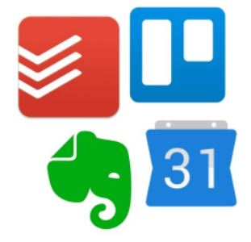

Las técnicas que estudio me ayudan a organizar mis pensamientos e ideas de manera lógica y coherente. Soy capaz de generar ideas, crear mapas mentales y desarrollar esquemas que me ayudan a comprender y recordar mejor el material que estoy aprendiendo. Además, estas técnicas me permiten dividir temas complejos en partes manejables, lo que hace que estudiar y escribir sea mucho más fácil. Definitivamente recomendaría estas técnicas a otros estudiantes que luchan por mantenerse organizados y al día con sus cursos. Algunas aplicaciones específicas que encuentro particularmente útiles son Evernote, Trello y Google Keep.
Descubrí que existen algunas técnicas clave que me ayudan a mantenerme organizado como estudiante universitario. En primer lugar, me aseguro de mantener un calendario con todas mis fechas y plazos importantes. Esto me ayuda a estar al tanto de las cosas y no perder ninguna fecha límite importante. En segundo lugar, uso aplicaciones como Evernote y Trello para ayudarme a realizar un seguimiento de mis tareas y listas de tareas pendientes. Estas aplicaciones son realmente útiles para mantenerme organizado y garantizar que no olvide nada importante. Finalmente, me aseguro de reservar algo de tiempo cada semana para planificar y organizar mi agenda para la próxima semana. Esto me ayuda a mantener el rumbo y asegura que estoy usando mi tiempo de manera efectiva.
